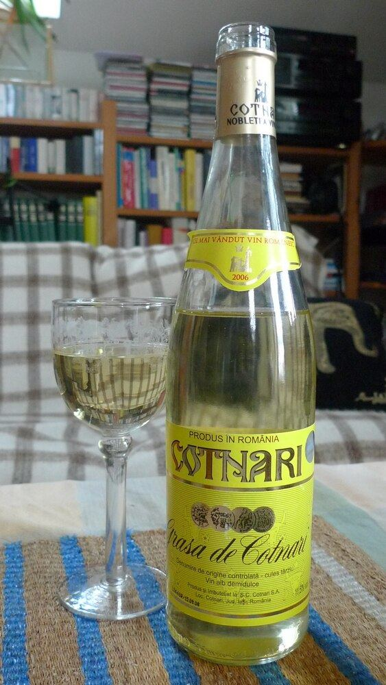

Grasă de Cotnari
A sweet white from the Grasă de Cotnari variety, the most emblematic wine of the Cotnari appellation in north-eastern Romania.

Grasă de Cotnari is the most characteristic variety of Cotnari, and its name, meaning “fat” or “unctuous”, refers to the texture of the wines it produces. It is a thin-skinned grape that accumulates a great deal of sugar and, in the area’s long, misty autumns, can be affected by noble rot. The Cotnari company, the appellation’s historic producer, makes it from its vineyards on the hills around the village.
Depending on the vintage and the ripeness of the grapes, the wine is sold at different levels of sweetness, generally as medium-sweet or sweet, and may carry the appellation’s terms indicating late harvest or nobly rotten grapes. It is a white with an unctuous texture and acidity that balances the sugar. The best vintages are very long-lived and over the years take on an amber colour and aromas of dried fruit and honey; the winery keeps a collection of old vintages.
Tasting profile
Golden, amber with age. Aromas of apricot, quince, honey, raisins and, in older wines, walnut. Sweet, unctuous, persistent palate.
Food pairing
Foie gras, blue cheeses, nut desserts, fruit tarts
Serving
10-12 °C, small dessert-wine glass